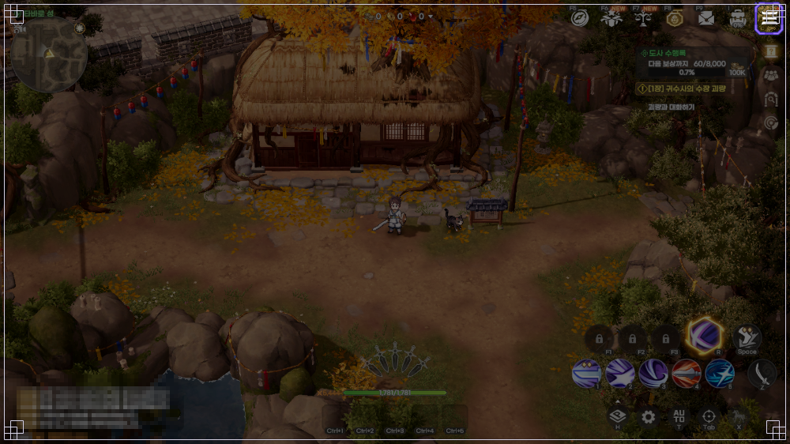
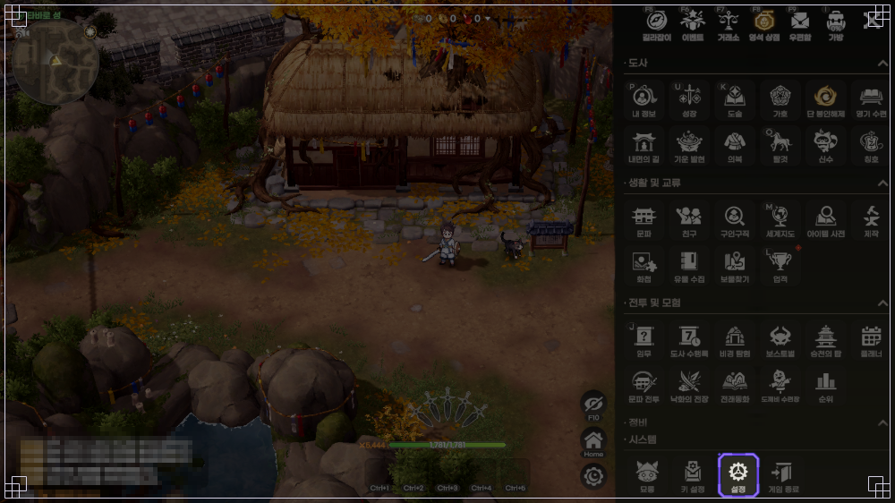
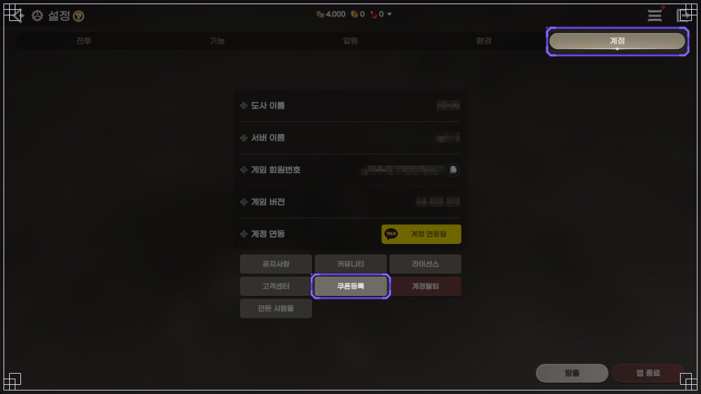
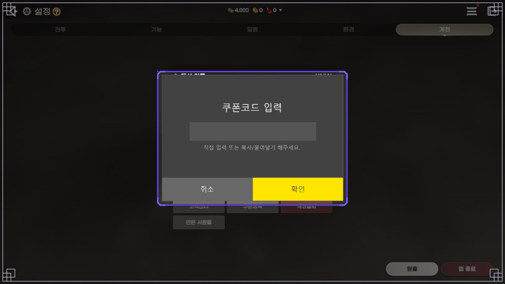
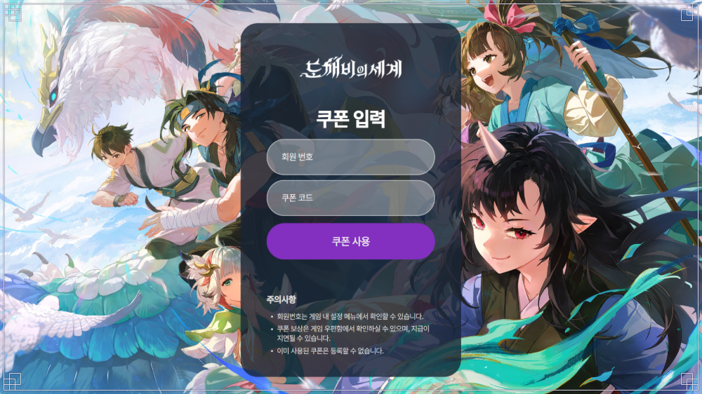
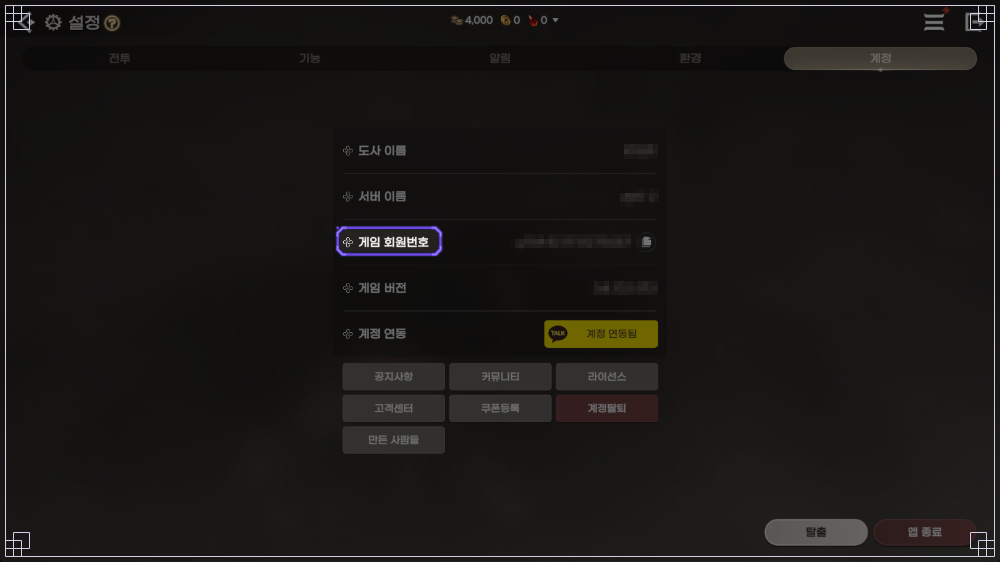

도깨비의세계 라이브 방송 감사 쿠폰 3종, 도깨비의다짐·약속·마음 보상과 사용 기한 정리
10월 9일 금요일 저녁 6시 라이브 방송이 끝나고, 감사 쿠폰 공지는 10일 새벽 0시 58분에 올라왔는데요. 쿠폰 이름이 도깨비의다짐·도깨비의약속·도깨비의마음 세 개인데 보상 칸이 아홉 개나 돼서, 저도 공지를 열어 놓고 한참 들여다봤어요. 10월 10일 기준으로 세 쿠폰의 보상과 쓸 수 있는 기간, 입력하는 곳까지 한 장에 정리해 둘게요.
| 쿠폰 | 보상 구성 | 요혼석 |
|---|---|---|
| 도깨비의다짐 | 엽전 100만 개와 가호 품목 2종 | 없음 |
| 도깨비의약속 | 1위 도술 조각 선택 상자·도술 강화 요령서 선택 첩·요혼석 | 100개 |
| 도깨비의마음 | 요혼석과 장신구·무기 선택 상자 | 200개 |
방송 날짜는 10월 9일(금), 공지가 올라온 날은 10월 10일(토) 새벽이라서 검색하다 보면 날짜가 서로 달라 보일 수 있어요. 공지에 적힌 세 쿠폰 공통 문구는 이렇게 세 가지예요.
- 사용 기간: 공지에 "사용 가능 기간이 없을 예정"이라고 적혀 있어요
- 수령 횟수: "계정당 1회만 수령할 수 있습니다"라는 문구가 붙어 있어요
- 수령 방법: 우편함 ▶ 서신으로 지급되고 7일 안에 받아야 해요
도깨비의다짐 보상은 뭐가 들어 있나요
도깨비의다짐은 세 쿠폰 가운데 엽전이 가장 많이 들어 있는 쿠폰이에요.
- 가호 주머니 (귀속) 20개
- 엽전 1,000,000개
- 희귀 가호의 정수 (귀속) 100개
100만 개 단위 엽전이 한 번에 들어오니 숫자만 보면 제일 묵직한 쿠폰이죠. 다만 공지 표에서 엽전 칸에만 귀속 표시가 없고, 나머지 두 칸, 가호 주머니와 희귀 가호의 정수에는 귀속이라고 적혀 있어요.
도깨비의약속 보상은 뭐가 들어 있나요
도깨비의약속은 도술 쪽 품목 두 가지에 요혼석을 묶어 주는 쿠폰이에요.
- 1위 도술 조각 선택 상자 (귀속) 3개
- 도술 강화 요령서 선택 첩 (귀속) 10개
- 요혼석 (귀속) 100개
요혼석은 공지의 팁에서 단을 통해 얻거나 희귀 등급 이상 장비를 분해해서 얻는 재료라고 소개한 품목인데, 이 쿠폰으로 바로 받을 수 있더라고요.
도깨비의마음 보상은 뭐가 들어 있나요
도깨비의마음은 요혼석 비중이 가장 큰 쿠폰이고, 선택 상자가 두 개 같이 와요.
- 요혼석 (귀속) 200개
- 도전자의 희귀 장신구 선택 상자 (귀속) 1개
- 희귀 무기 선택 상자 (귀속) 1개
장신구와 무기가 상자 하나씩이라 장비 쪽은 두 칸으로 채우는 구성이에요. 약속과 마음의 요혼석 칸을 더하면 300개인데, 공지에 적힌 숫자가 아니라 두 쿠폰을 합쳤을 때의 수치예요.
확인 위치: 우편함에서 보상을 받은 뒤 각 상자를 열었을 때의 선택 화면, 우편함 서신 목록에 보이는 남은 기간 표기 · 확인되면 이 자리에 채워 주세요.
라이브 방송 감사 쿠폰은 언제까지 쓸 수 있나요
감사 쿠폰 3종은 사용 기간을 따로 두지 않고 운영할 예정이라고 공지에 적혀 있어요.
같은 시기에 나온 1위 기념 특별 쿠폰(애플1위풍악을울려라·구글1위잔치로구나)이 공지 기준 10월 8일(목)부터 11월 11일(수) 23:59까지로 기간이 정해진 것과 비교하면 결이 달라요. 대신 챙길 건 쿠폰 기간이 아니라 우편함이에요. 우편함에 들어온 보상은 일주일 안에 받지 않으면 삭제되고 되돌릴 수 없다고 하니, 쿠폰은 언제든 써도 되지만, 우편함 수령은 그날 바로 하시는 게 좋아요.
도깨비의세계 쿠폰등록은 PC와 안드로이드에서 어디서 하나요
PC와 안드로이드에서는 게임 안 메뉴의 설정, 계정 탭에 있는 쿠폰등록 버튼으로 들어가서 쿠폰 코드를 입력해요.
먼저 메인 화면 오른쪽 위에 있는 메뉴 아이콘(그림의 보라색 테두리)을 눌러 주세요.

메뉴가 펼쳐지면 맨 아래 시스템 줄에서 설정 버튼을 열어요.

설정 화면 오른쪽 위의 계정 탭으로 가면 아래쪽 버튼 줄에 쿠폰등록 버튼이 보여요.

누르면 쿠폰 코드 입력 창이 뜨고, 직접 입력하거나 복사해서 붙여넣은 다음 확인을 누르면 보상이 우편함으로 가요.

확인 위치: 쿠폰코드 입력 창에서 실제 입력한 결과 · 확인되면 이 자리에 채워 주세요.
아이폰은 쿠폰 입력 페이지에서 어떻게 쓰나요
가이드는 아이폰이라면 쿠폰 입력 웹 페이지에서 회원 번호와 쿠폰 코드를 넣고 쿠폰 사용 버튼을 누르도록 안내해요.
같은 시스템인데 이름이 둘이라 헷갈리기 쉬운데요, 게임 안 버튼은 쿠폰등록이고 웹 페이지 제목은 쿠폰 입력이에요. 공지가 안내한 쪽은 웹 페이지라서, 공지만 읽으면 웹으로만 되는 줄 아실 수 있어요.

입력 칸은 회원 번호와 쿠폰 코드 두 개뿐이고, 아래 주의사항에도 회원 번호는 게임 안 설정 메뉴에서 확인하라고 적혀 있어요. 위치는 설정의 계정 탭, 게임 회원번호 칸이에요.

쿠폰 말고 점검 후 우편으로 오는 지급은 뭔가요
같은 공지에 적힌 소급 지원과 도술 선택 상자는 쿠폰 입력 없이 우편이나 콘텐츠 참여로 받는 항목이에요. 정기단·비경 충전부 소급분은 점검이 끝난 뒤 올라온 후속 공지에서 일정이 바뀌었으니 그 내용으로 읽어 주세요.
| 구분 | 받는 방법 |
|---|---|
| 정기단·비경 충전부 소급 지급 | 10월 10일 기준 집계 중이라 확인이 끝나는 대로 지급 예정(10/9 이후 사용분은 지급 완료) |
| 패스 요혼석 소급 지원 | 10월 10일(토) 점검 후 우편 지급 예정(12167 기준이고, 이후 공지에 지급 완료 안내는 아직 없어요) |
| 도술 선택 상자(최대 8개, 상자당 도술 조각 100개) | 문파 콘텐츠 참여 경로를 추가할 예정(12167 기준, 참여 조건은 별도 공지) |
우편함에 지원 우편과 쿠폰 보상이 나란히 쌓일 수 있으니 하나씩 열어 확인하면서 받으시면 돼요. 특히 패스 요혼석 소급 지원은 도깨비의약속·마음의 요혼석 칸과 같은 요혼석이라 한꺼번에 합쳐 세기 쉬우니 따로 계산해 두세요. 문파 미션의 도술 선택 상자도 도깨비의약속의 1위 도술 조각 선택 상자와 이름이 다른 품목이에요.
자주 묻는 질문
Q. 쿠폰 3종을 전부 받을 수 있나요?
공지에는 "계정당 1회"라는 문구만 있어요. 쿠폰별로 한 번씩인지 3종을 합쳐 한 번인지는 공지만 봐서는 알 수 없어요.
Q. 기간이 없다는 게 영원히 쓸 수 있다는 뜻인가요?
10월 10일 기준으로는 시작일도 종료일도 적혀 있지 않아요. 예정형 문구라서 이후 공지로 확정되면 달라질 수 있으니, 쓰기 전에 공지를 한 번 더 확인해 보세요.
Q. 방송을 못 봤어도 쓸 수 있나요?
공지가 대상을 지금 게임을 하는 분과 앞으로 시작할 분 모두로 적었고, 방송 시청을 조건으로 건 문구는 보이지 않아요.
Q. 쿠폰 보상은 어느 캐릭터의 우편함으로 오나요?
게임 안에서 입력하면 입력한 캐릭터로, 웹 페이지에서 입력하면 처음 접속한 캐릭터나 접속 중인 캐릭터로 간다고 가이드에 나와 있어요.
Q. 입력했는데 보상이 안 보여요.
가이드에 지급이 늦어질 수 있다는 안내가 있어요. 이미 사용된 쿠폰은 다시 등록되지 않으니 같은 쿠폰을 거듭 넣어 보지는 마세요.
도깨비의세계 라이브 방송 감사 쿠폰 정리
이 쿠폰은 기간이 없을 예정이라고 안내돼서 마감 걱정은 덜한 대신 우편함 7일이 진짜 기한이라서, 저는 쿠폰을 쓰자마자 서신부터 열어 수령까지 끝내 두려고요. 하나만 먼저 쓴다면 요혼석이 200개로 가장 많은 도깨비의마음부터 열어 볼 생각이에요. 다들 보상 챙겨서 즐겜하세요~
✔ 도깨비의세계 같이 보기 좋은 내용
· 도깨비의세계 필드보스 시간 요일별 일정표, 신기 쟁탈전 미혹의 정원 문파전 시간까지 한 장으로
· 도깨비의세계 보물상자 위치 정리, 지역 19곳 상자 91개 미니맵 번호 핀과 상자별 보상
· 도깨비의세계 쿠폰 4종 정리, 코드 입력하는 법과 마감일 한눈에
참고한 곳 (2026.10.10 기준)
· 공지 12167: 10월 9일(금) 라이브 방송 종합 안내 및 감사 쿠폰 안내
· 가이드 7733: 쿠폰 등록
· 공지 13011: 10월 10일(토) 임시 점검 완료 및 보상 지급 안내
· 공지 10503: 구글 플레이 스토어 인기 1위 기념 특별 쿠폰 안내
· 도깨비의세계 쿠폰 입력 페이지